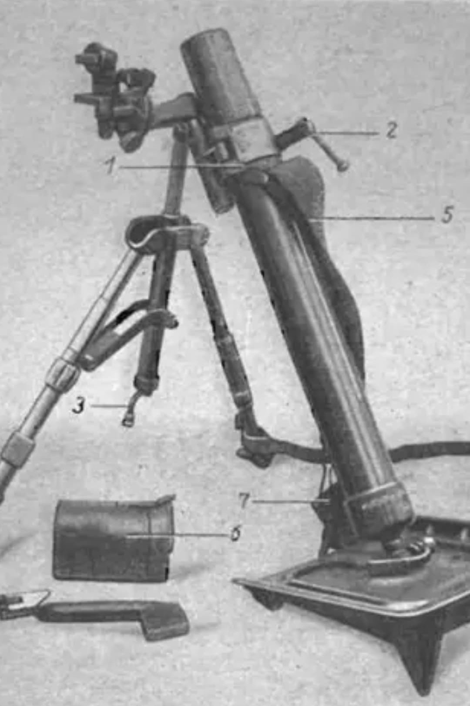

Les armes françaises de la Seconde Guerre mondiale représentent un ensemble varié de modèles issus de plusieurs décennies d’évolution. Entre modernisation rapide, héritage de la Grande Guerre et innovations techniques, l’armement français de 1915 à 1945 reflète une période complexe où coexistent équipements anciens et armes de conception récente.
Cette section du Musée HOP WW2 présente l’ensemble des armes blanches, fusils, pistolets, fusils-mitrailleurs, mitrailleuses et armes d’appui utilisées par les forces françaises durant le conflit. Chaque fiche offre une description détaillée, des photographies, et les éléments permettant d’identifier un modèle authentique.
Le mortier Brandt de 60 mm est l’un des mortiers légers les plus performants de l’entre-deux-guerres. Conçu par la société Brandt, il offre une excellente précision, une cadence de tir rapide et une grande mobilité, ce qui en fait une arme idéale pour l’appui rapproché de l’infanterie.
En 1939–1940, il équipe les sections d’infanterie françaises, permettant des tirs courbes efficaces contre les positions ennemies, les regroupements de troupes et les obstacles.

Le mortier Brandt 60 mm est adopté dans les années 1930 et devient rapidement l’un des mortiers légers les plus efficaces au monde. Sa conception inspire de nombreux modèles étrangers, notamment américains et britanniques.
Durant la campagne de France en 1940, il est utilisé pour l’appui rapproché, permettant aux unités françaises de disposer d’un tir indirect rapide et précis. Sa légèreté facilite son transport et son déploiement sur le terrain.